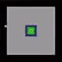

Awaiting data...
Will Forsen beat xQc by April 30?
Tracking the survival rate of the runs. This shows exactly how many runs made it to each specific stage, and the statistical chance of a run surviving that far.